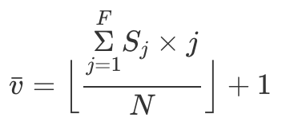

Algoritmo de Dysart-Georganas
Ver en Notas
Algoritmo
-
Encuentra los K vecinos más cercanos para cada nodo.
-
Para cada nodo, encuentra su frecuencia = cuántas veces aparece en la lista de vecinos más cercanos + 1.
-
Ahora cuenta cuántas veces ocurre (S_j) cada frecuencia (j) y calcula (donde N es el no. de nodos):

- Los nodos contendientes son aquellos cuya frecuencia es mayor o igual a v.
Calculadora
Número de nodos:
Simétrica:
K =